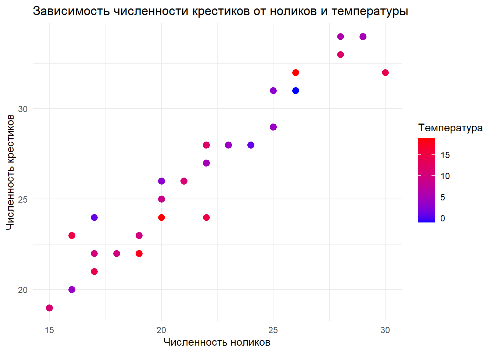

Тема: Регрессионный анализ
В этом домашнем задании мы изучали связи между крестиками и ноликами и температурой. В этом домашнем задании мы изучали связи между крестиками и ноликами и температурой.
В этом домашнем задании мы изучали связи между крестиками и ноликами и температурой. В этом домашнем задании мы изучали связи между крестиками и ноликами и температурой.
В этом домашнем задании мы изучали связи между крестиками и ноликами и температурой. В этом домашнем задании мы изучали связи между крестиками и ноликами и температурой.
Мы прочитали таблицу данных и подготовили численные оценки обилия крестиков и ноликов.
Была построена линейная модель следующего вида
\[ y = b_0 + b_1 \cdot Z + b_2 \cdot t + \varepsilon \]
model <- lm(Crosses ~ Zeros + Temp, data = data)| Член модели | Оценка парамтера | SE | t | p-value |
|---|---|---|---|---|
| (Intercept) | 5.6179323 | 1.2442183 | 4.515230 | 0.0001120 |
| Zeros | 0.9826224 | 0.0534547 | 18.382343 | 0.0000000 |
| Temp | -0.0597747 | 0.0394050 | -1.516932 | 0.1409062 |
То же самое но с помощью синтаксиса RMD
| term | estimate | std.error | statistic | p.value |
|---|---|---|---|---|
| (Intercept) | 5.6179323 | 1.2442183 | 4.515230 | 0.0001120 |
| Zeros | 0.9826224 | 0.0534547 | 18.382343 | 0.0000000 |
| Temp | -0.0597747 | 0.0394050 | -1.516932 | 0.1409062 |
| ascs | vsdvs | vssdv | svdv | |||
|---|---|---|---|---|---|---|
| vs | vs | sdv | ||||
| vs | vs | sv | sv |

Ура получилось!!!